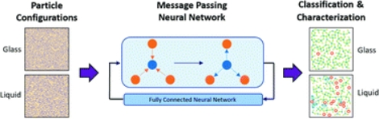

Contact:
- email: shubhendu@{csail.mit OR ttic}.edu
Research reports
|
|
Zhen Lin, Shubhendu Trivedi, Jimeng Sun, Advances in Neural Information Processing Systems 35 (NeurIPS), 2022 arXiv preprint arXiv:2205.09940 [Code] |

|
Zhen Lin, Shubhendu Trivedi, Jimeng Sun, Transactions on Machine Learning Research (TMLR), 2022 arXiv preprint arXiv:2205.12940 [Code] |

|
Zhen Lin, Shubhendu Trivedi, Jimeng Sun, Under Review, 2022 arXiv preprint arXiv:2202.07679 [Code] |

|
Matthew Farrell, Blake Bordelon, Shubhendu Trivedi, Cengiz Pehlevan, International Conference on Learning Representations (ICLR), 2022 arXiv preprint arXiv:2110.07472 [Code] Oral presentation at NeuReps 2022 (link). |

|
Zhen Lin, Nicholas D. Huang, Camille Avestruz, W. L. Kimmy Wu, Shubhendu Trivedi, João Calderia, Brian D. Nord, Monthly Notices of the Royal Astronomical Society (MNRAS) 507 (3), 2021 arXiv preprint arXiv:2102.13123 [Code] |

|
Zhen Lin, Shubhendu Trivedi, Jimeng Sun, Advances in Neural Information Processing Systems 34 (NeurIPS), 2021 arXiv preprint arXiv:2106.00225 [Code] |
|
|
Suhas Lohit, Shubhendu Trivedi, Technical Report., 2020 arXiv preprint arXiv:2012.04474 |

|
Shubhendu Trivedi, Technical Report., 2020 arXiv preprint arXiv:2006.03550 |
|

|
Kirk Swanson, Shubhendu Trivedi, Joshua Lequieu, Kyle Swanson, Risi Kondor, Soft Matter, The Royal Society of Chemistry, 2020 arXiv preprint arXiv:1909.04648 [Code] |

|
J. Amundson et al. , White Paper for NSF, 2019 arXiv preprint arXiv:1911.05796 |
|
|
Pramod Kaushik Mudrakarta, Shubhendu Trivedi, Risi Kondor, Technical Report., 2019 arXiv preprint arXiv:1910.05132 |
|
|
João Calderia, W. L. Kimmy Wu, Brian D. Nord, Camille Avestruz, Shubhendu Trivedi, Kyle T. Story, Astronomy and Computing 28, 100307 , 2019 arXiv preprint arXiv:1810.01483 [Code] |

|
Hy Truong Son, Shubhendu Trivedi, Horace Pan, Brandon M. Anderson, Risi Kondor, 15th International Workshop on Learning and Mining with Graphs, 2019 |
|
|
Shubhendu Trivedi, PhD Thesis , 2018 arXiv preprint arXiv:1808.10078 |

|
Hy Truong Son, Shubhendu Trivedi, Horace Pan, Brandon M. Anderson, Risi Kondor, The Journal of Chemical Physics (JCP) 148 (24), 241745 , 2018 Editor's Pick in JCP's Special Issue on Data-Enabled Theoretical Chemistry |

|
Risi Kondor†, Zhen Lin†, Shubhendu Trivedi†, Advances in Neural Information Processing Systems 31 (NeurIPS) , 2018 arXiv preprint arXiv:1806.09231 [Code] † denotes alphabetical author ordering |
|
|
Risi Kondor, Shubhendu Trivedi†, International Conference on Machine Learning (ICML) , 2018 arXiv preprint arXiv:1802.03690 |

|
Risi Kondor†, Hy Truong Son†, Horace Pan†, Brandon M. Anderson†, Shubhendu Trivedi†, International Conference on Learning Representaions (ICLR) - WS , 2018 arXiv preprint arXiv:1801.02144 [Code] † Author ordering is entirely arbitrary |
|
|
Shubhendu Trivedi, Zachary A. Pardos, Neil T. Heffernan, Technical Report., 2015 arXiv preprint arXiv:1509.06163 |

|
Shubhendu Trivedi, David McAllester, Gregory Shakhnarovich, Advances in Neural Information Processing Systems 27 (NeurIPS), 2014 |

|
Shubhendu Trivedi, Jialei Wang, Samory Kpotufe, Gregory Shakhnarovich, Uncertainty in Artificial Intelligence (UAI), 2014 |

|
Fei Song, Shubhendu Trivedi, Yutao Wang, Gábor N. Sárközy, Neil T. Heffernan, AAAI FLAIRS, 2013 |

|
Shubhendu Trivedi, M.S. Thesis , 2012 WPI ETD-043012-104639 |
|
|
Gábor N. Sárközy†, Fei Song†, Endre Szemerédi†, Shubhendu Trivedi†, Technical Report WPI-CS-TR-12-05, 2012 arXiv preprint arXiv:1209.6540 † denotes alphabetical author ordering |
|
|
Zachary A. Pardos, Shubhendu Trivedi, Neil T. Heffernan, Gábor N. Sárközy, Intelligent Tutoring Systems (ITS), 2012 |
|
|
Shubhendu Trivedi, Zachary A. Pardos, Gábor N. Sárközy, Neil T. Heffernan, Educational Data Mining (EDM), 2012 International Educational Data Mining Society |
|
|
Zachary A. Pardos, Qingyang Wang, Shubhendu Trivedi, Educational Data Mining (EDM), 2012 International Educational Data Mining Society |

|
Shubhendu Trivedi, Zachary A. Pardos, Neil T. Heffernan, Educational Data Mining (EDM), 2011 International Educational Data Mining Society |

|
Shubhendu Trivedi, Zachary A. Pardos, Neil T. Heffernan, Artificial Intelligence in Education (AIED), 2011 |
Teaching
I have taught in various capacities over the years -- teaching students from middle-school, high school, community colleges and at the undergraduate and graduate levels. I have done so as a tutor, as a volunteer, as a teaching assistant, as a teacher attached with non-profits and as an instructor on record at various universities. I have also TA'ed a dozen CS/Math/EE courses during my graduate studies (despite always being fully funded and not being required to). Once in a while I have won awards for my teaching and related duties, such as through the University of Chicago CS department, University of Chicago Physical Sciences division, WPI Computer Science and University of Pune.Graduate and undergraduate courses as instructor:
- Deep Learning (University of Chicago, Computer Science. Course code: CMSC 35246, Textbook: Bengio, Goodfellow, Courville;
Course website)
The course is a bit dated at this point, but still might be useful, please peruse the site for readings. Since I was a graduate student when this course was taught, it had a faculty mentor (Risi Kondor). This course basically used some material I had prepared for presenting in Risi Kondor's lab the previous year, while starting up work and building interest there in deep learning and equivariant learning.
Since I no longer have control over the course website linked above, I am unable to add some missing slides, which were at the time posted internally. Here are the lecture slides posted again (these are with "pauses", if that annoys you, find the "flat" versions on the course website):
|Lecture 1|Lecture 2| Lecture 3|Lecture 4| Lecture 5|Lecture 6| Lecture 7|Lecture 8| Lecture 9|Lecture 10| Lecture 11|Lecture 12| Lecture 13|Lecture 14| Lecture 15|Lecture 16| Lecture 17|Lecture 18.| - Introduction to Digital Image Processing (University of Pune, Electrical Engineering; Textbook: Gonzalez and Woods; Jointly taught with prof Kalyani R. Joshi)
- Image and Signal Processing Lab with MATLAB (University of Pune, Electrical Engineering)
- Introduction to Bioinformatics (University of Pune, Computer Science)
In most of the courses listed below I usually gave a couple of lectures (other than the usual TA duties). In the WPI courses, I taught a weekly recitation, which involved repeating the course material at another time. I have won awards for three of these courses.
- WPI CS 534 Graduate Artificial Intelligence (Instructor: Neil T. Heffernan, Textbook: Russell and Norvig)
- TTIC 31020 Graduate Introduction to Statistical Machine Learning (Instructor: Gregory Shakhnarovich)
- CS 4120 Analysis of Algorithms (Instructor: Gábor N. Sárközy, Textbook: CLRS/Kleinberg-Tardos)
- CS 2223 Introduction to Algorithms wih Lua (Instructor: Joshua D. Guttman, Textbook: CLRS)
- CS 3133 Automata Theory (Instructor: Gábor N. Sárközy, Textbook: Sudkamp)
- CS 4341 Introduction to Artificial Intelligence (Instructor: Neil T. Heffernan, Textbook: Russell and Norvig)
- MA 2201 Discrete Mathematics (Instructor: Gábor N. Sárközy, Textbook: Kenneth Rosen)
- CS 2223 Introduction to Algorithms wih Lua (Instructor: Joshua D. Guttman, Textbook: CLRS)
- CS 3133 Automata Theory (Instructor: Gábor N. Sárközy, Textbook: Sudkamp, Dexter Kozen)
- CS 2011 Introduction to Machine Organization and Assembly Language (Instructor: Hugh C. Lauer, Textbook: Bryant and Halloran)
- STAT 27725/CMSC 25400 Machine Learning (Instructor: Imre Risi Kondor). Slides from some lectures from this course: | 1 | 2 | 3 | 4 |
I usually interact with highschool and middle school students through non-profits or volunteer organizations (some examples below). However, I am open to mentoring highschool students who might be interested in a career in science or mathematics. I will usually have the bandwidth for one student (or a group with the same interests) at a time, and like to work with them for an extended period of time. Online is fine (note: this is not a work solicitation, I do not charge, but I should be convinced that I can make a difference to the student(s), and that they can not afford the same arrangement elsewhere).
- I taught middle school students in municipal schools and tribal areas around Pune for three years as part of a Power Electronics Society program when in undergrad.
- Intro. to Artificial Intelligence (organized by MSSY, a 501(c)(3) nonprofit). Students were from highschool.
- Intro. to Machine Learning (organized by MSSY, a 501(c)(3) nonprofit). Middle school to highschool.
I haven't taught at community colleges in an official capacity (please get in touch if you want me to deliver lectures!). But I have worked with about 25 community college students over the years. I enjoy working closely with advanced students and have covered courses in mathematics, basic electronics and electrical engineering, computer science (including programming) etc. I might have the bandwidth for one student (or a group with the same interests) at a time. I prefer meeting in person (usually Saturdays). If you are a community college student and located geographically close to me, and find it hard to afford tutoring, are interested in a career in data science/machine learning/mathematics but feel like you need some mentorship, please feel free to get in touch with me. As above, the only thing I need is that I should be convinced I can make a real difference.
Service and other activities
Refereeing activities: I referee roughly 60-70 papers a year from various venues in machine learning, computational physics, computational and applied mathematics, experimental mathematics, information theory and applied statistics. These venues include the following:Journals:
- Nature Astronomy
- Journal of Machine Learning Research
- Transactions on Machine Learning Research
- IEEE Transactions on Pattern Analysis and Machine Intelligence
- IEEE Transactions on Information Theory
- IEEE Transactions on Medical Imaging
- IEEE Transactions on Neural Networks and Learning Systems
- Annals of Mathematics and Artificial Intelligence
- F1000Research
- Nature Communications
- International Conference on Machine Learning (ICML)
- Neural Information Processing Systems (NeurIPS)
- International Conference on Learning Representations (ICLR)
- IEEE Conference on Computer Vision and Pattern Recognition (CVPR)
- IEEE International Conference on Computer Vision (ICCV)
- IEEE European Conference on Computer Vision (ECCV)
- Winter Area Conference on Computer Vision (WACV)
- ACM SIGGRAPH
- NeurIPS Workshop on Machine Learning and the Physical Sciences